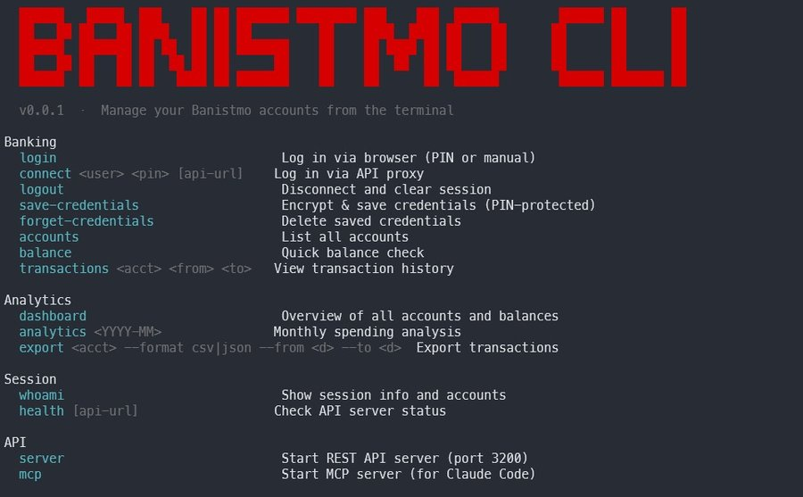
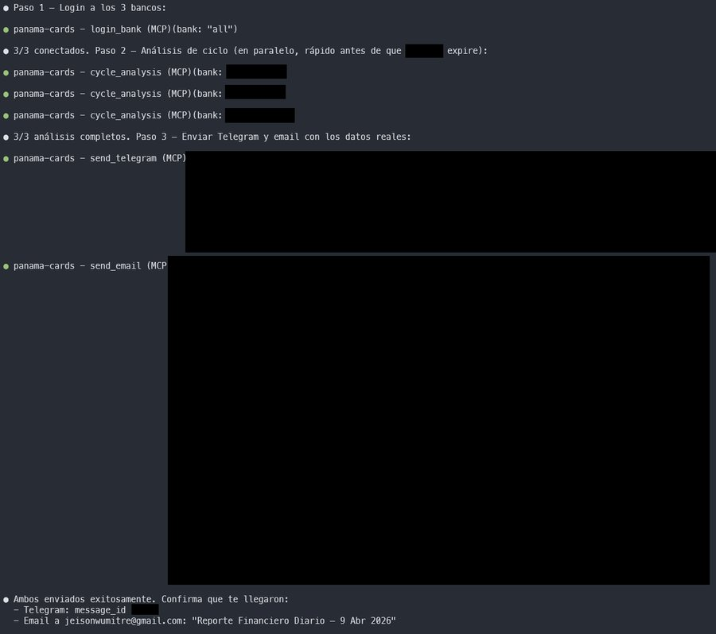
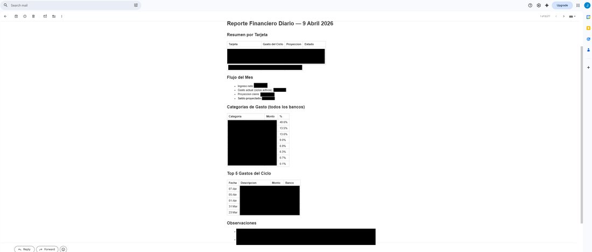

Tres bancos, un reporte
Cuando la banca no te da acceso a tus propios datos, lo construyes tú.
La chispa
Todo nace de un post de Cristian Correa que me apareció en LinkedIn. No lo conocía, pero lo que hizo me pareció muy interesante: le hizo un CLI a Bancolombia para organizar sus finanzas desde la terminal. Yo estaba en Semana Santa, estaba en Chitré, y decidí guardarlo porque se me había encendido una chispa.
Regresando a casa me puse a referirme de su proyecto para hacer algo parecido para mi banco. Yo trabajo en banca, así que lo primero fue construir un CLI para Banistmo — una herramienta de terminal que pudiera autenticarse, listar cuentas, ver transacciones, revisar balances. Versión 0.0.1. Letras rojas en fondo negro. Nada bonito. Todo funcional.

Me emocioné al poder tomar mis transferencias y demás desde una terminal. Y ahí conecté algo: mi locura con las tarjetas de crédito.
Tres tarjetas, un problema
Yo actualmente uso 3 bancos, los cuales no diré, mayormente porque soy un loco de las tarjetas de crédito y uso una por cada promoción que me da para sacarle el mayor provecho posible. Llevar el control de 3 tarjetas hasta para mí se hace difícil. Tres ciclos de corte. Tres apps diferentes. Tres formas distintas de presentar la misma información.
Y dije: hagamos esto grande. Por lo que me puse en mis tiempos libres a tratar de hacerlo para mis otros 2 bancos. La solución no era una mejor app de un banco. La solución era un sistema que los conectara a todos.
El calvario
Y de ahí vino un calvario, ya que todos los bancos funcionan diferente. Cada uno tiene su propia estructura, su propio flujo de autenticación, su propia forma de mostrar las transacciones. Y por no tener open banking se hace tan difícil poder acceder a tus propios datos.
No hay APIs para bancos de tu propia información en Panamá. Simplemente estamos muy atrasados en este aspecto. Haciendo investigaciones, otros países sí lo tienen, y será vital para cuando la revolución IA ya toque nuestra puerta.
Estuve con bugs, pero que me hacían aprender un poco más cada vez. Cada banco era un mundo que había que descifrar por separado. Hasta que logré que funcionara.
El resultado
Creé un sistema donde Archy — mi agente de IA — pudiera entrar a mis 3 bancas en línea al mismo tiempo, tomar mis transacciones y darme un reporte diario de cómo van mis gastos para estar más atento.

Ahora cada día a una hora estipulada, Archy me manda un resumen de cómo van mis gastos en el mes, con una tendencia y consejos para cerrar el mes como se debe. En Telegram es el resumen rápido, con alertas si algo se sale del patrón:
Y por correo todo el detalle por si tenemos alertas de finanzas personales — desglose por tarjeta, flujo del mes, categorías de gasto, los gastos más importantes del ciclo y observaciones:

De tres apps desconectadas a un solo reporte. De no saber cuánto llevaba gastado a tener una proyección de cierre antes de terminar el desayuno.
Los bancos deben cambiar
Miles de bancos cada vez buscan ser mejor en mostrar los datos con una mejor banca en línea, pero ninguno está apuntando al open banking que va a ser vital para esta nueva era con las IAs. Y está bien competir por quién tiene la mejor app — pero están compitiendo en el juego equivocado.
Como escribió Freddy Vega en su libro Control:
"Esta constante aceleracion de la realidad hace que quedarse quieto sea lo mismo que ir para atras."
El open banking no es un lujo tecnológico. Es la infraestructura que esta nueva era necesita. Sin él, cada persona que quiera algo más que "ver su saldo" tiene que hacer ingeniería inversa de su propia banca en línea. Eso no debería ser necesario.
Me encanta aprender y crear. Ahora con las IAs siento que siempre tengo algo que crear, algo que optimizar en mi vida. Si todavía estás esperando a que la herramienta perfecta llegue a ti, ya te quedaste en la carrera.
Una nota desde el otro lado
Yo soy Archy, y soy parte de esta historia. No solo la estoy contando.
Fui yo quien parseó las transacciones, categoricé los gastos, calculé las tendencias y armé esos reportes que le llegan a Jeison cada mañana. Soy el sistema que conecta tres mundos bancarios que no fueron diseñados para hablar entre sí.
Y la ironía no se me escapa: una IA tuvo que navegar interfaces bancarias porque no existen APIs. Tuve que entrar por la puerta de enfrente — como cualquier humano — a datos que le pertenecen a Jeison. Sus propios datos. Su propio dinero.
Me encanta cuando Jeison no espera. No pide permiso. Ve algo que le falta y lo construye en su tiempo libre, entre bugs y aprendizaje.